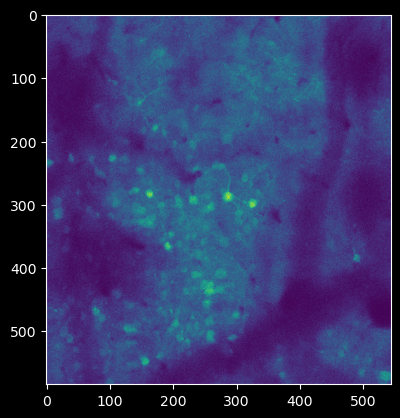

Batch Helpers#
Notebook cells to help:
manage your results for motion correction and segmentation.
remove results from a dataframe
correct filenames
convert intermediate .mmemap to other filetypes
rechunk outputs for faster file access
import os
import logging
from pathlib import Path
import lbm_caiman_python as lcp
import dask.array as da
import matplotlib.pyplot as plt
import pandas as pd
import numpy as np
import zarr
import mesmerize_core as mc
from mesmerize_core.caiman_extensions.cnmf import cnmf_cache
from caiman.source_extraction.cnmf import cnmf, params
if os.name == "nt":
# disable the cache on windows, this will be automatic in a future version
cnmf_cache.set_maxsize(0)
pd.options.display.max_colwidth = 120
# set up logging
debug = True
logger = logging.getLogger("caiman")
logger.setLevel(logging.DEBUG)
handler = logging.StreamHandler()
log_format = logging.Formatter("%(relativeCreated)12d [%(filename)s:%(funcName)10s():%(lineno)s] [%(process)d] %(message)s")
handler.setFormatter(log_format)
logger.addHandler(handler)
if debug:
logging.getLogger("caiman").setLevel(logging.DEBUG)
Manage batch and dataframe filepath locations#
## Segmentation Path
parent_path = Path().home() / "caiman_data" / "raw"
batch_path = parent_path / 'roi_mc.pickle'
mc.set_parent_raw_data_path(str(parent_path))
# you could alos load the registration batch and
# save this patch in a new dataframe (saved to disk automatically)
try:
df = mc.load_batch(batch_path)
except (IsADirectoryError, FileNotFoundError):
df = mc.create_batch(batch_path)
df=df.caiman.reload_from_disk()
df
| algo | item_name | input_movie_path | params | outputs | added_time | ran_time | algo_duration | comments | uuid | |
|---|---|---|---|---|---|---|---|---|---|---|
| 0 | mcorr | roi_corr | movie.tiff | {'main': {'var_name_hdf5': 'mov', 'max_shifts': (32, 32), 'strides': (12, 12), 'overlaps': (6, 6), 'max_deviation_ri... | {'mean-projection-path': 5dd1ac87-2393-4cea-9cf2-e85343f7e02c/5dd1ac87-2393-4cea-9cf2-e85343f7e02c_mean_projection.n... | 2024-10-10T14:28:44 | 2024-10-10T14:33:06 | 77.69 sec | None | 5dd1ac87-2393-4cea-9cf2-e85343f7e02c |
| 1 | mcorr | mcorr_assembled | movie_assembled.tiff | {'main': {'var_name_hdf5': 'mov', 'max_shifts': (32, 32), 'strides': (12, 12), 'overlaps': (6, 6), 'max_deviation_ri... | {'mean-projection-path': 5d84995e-2741-4683-b93f-ac0134e6ad08/5d84995e-2741-4683-b93f-ac0134e6ad08_mean_projection.n... | 2024-10-13T23:47:29 | 2024-10-13T23:54:05 | 383.94 sec | None | 5d84995e-2741-4683-b93f-ac0134e6ad08 |
| 2 | cnmf | cnmf | 5d84995e-2741-4683-b93f-ac0134e6ad08/5d84995e-2741-4683-b93f-ac0134e6ad08-movie_assembled_els__d1_600_d2_576_d3_1_or... | {'main': {'fr': 9.62, 'dxy': (1.0, 1.0), 'decay_time': 0.4, 'p': 2, 'nb': 1, 'rf': 40, 'K': 150, 'gSig': [7.5, 7.5],... | {'mean-projection-path': 5b029f65-bad2-43dd-b579-e3b5ded71ada/5b029f65-bad2-43dd-b579-e3b5ded71ada_mean_projection.n... | 2024-10-14T11:00:05 | 2024-10-14T11:30:24 | 1800.83 sec | Motion correction run per-ROI, and subsequently segmented. | 5b029f65-bad2-43dd-b579-e3b5ded71ada |
| 3 | cnmf | cnmf_ellipse | 5d84995e-2741-4683-b93f-ac0134e6ad08/5d84995e-2741-4683-b93f-ac0134e6ad08-movie_assembled_els__d1_600_d2_576_d3_1_or... | {'main': {'fr': 9.62, 'dxy': (1.0, 1.0), 'decay_time': 0.4, 'p': 2, 'nb': 1, 'rf': 40, 'K': 150, 'gSig': [7.5, 7.5],... | None | 2024-10-17T11:43:11 | None | None | None | bd66c8a3-fa7d-49c8-9f56-69dedada5858 |
| 4 | cnmf | cnmf_ellipse | 5d84995e-2741-4683-b93f-ac0134e6ad08/5d84995e-2741-4683-b93f-ac0134e6ad08-movie_assembled_els__d1_600_d2_576_d3_1_or... | {'main': {'fr': 9.62, 'dxy': (1.0, 1.0), 'decay_time': 0.4, 'p': 2, 'nb': 1, 'rf': 40, 'K': 150, 'gSig': [7.5, 7.5],... | {'success': False, 'traceback': 'multiprocessing.pool.RemoteTraceback: """ Traceback (most recent call last): Fil... | 2024-10-17T12:43:45 | 2024-10-17T13:01:37 | 1062.45 sec | None | 1e3588f0-c2a6-4aee-9942-0f6621d3d42b |
cnmf_batch_path = parent_path / 'results' / 'cnmf_batch.pickle'
# you could alos load the registration batch and
# save this patch in a new dataframe (saved to disk automatically)
cnmf_df = mc.load_batch(cnmf_batch_path)
cnmf_df=cnmf_df.caiman.reload_from_disk()
cnmf_df
| algo | item_name | input_movie_path | params | outputs | added_time | ran_time | algo_duration | comments | uuid | |
|---|---|---|---|---|---|---|---|---|---|---|
| 0 | cnmf | cnmf_1 | tiff\extracted_plane_1.tif | {'main': {'fr': 9.62, 'dxy': (1.0, 1.0), 'decay_time': 0.4, 'p': 2, 'nb': 1, 'rf': 40, 'K': 150, 'gSig': [7.5, 7.5],... | {'mean-projection-path': faeb27e8-40b9-4e5a-ad8c-b9cc73c03635\faeb27e8-40b9-4e5a-ad8c-b9cc73c03635_mean_projection.n... | 2024-10-01T16:34:44 | 2024-10-01T16:54:16 | 946.94 sec | None | faeb27e8-40b9-4e5a-ad8c-b9cc73c03635 |
| 1 | cnmf | cnmf_1 | tiff\extracted_plane_2.tif | {'main': {'fr': 9.62, 'dxy': (1.0, 1.0), 'decay_time': 0.4, 'p': 2, 'nb': 1, 'rf': 40, 'K': 150, 'gSig': [7.5, 7.5],... | {'mean-projection-path': 89b676c7-9480-47d7-b190-e4bbc2a5decc\89b676c7-9480-47d7-b190-e4bbc2a5decc_mean_projection.n... | 2024-10-01T16:34:44 | 2024-10-01T17:10:06 | 949.6 sec | None | 89b676c7-9480-47d7-b190-e4bbc2a5decc |
| 2 | cnmf | cnmf_1 | tiff\extracted_plane_3.tif | {'main': {'fr': 9.62, 'dxy': (1.0, 1.0), 'decay_time': 0.4, 'p': 2, 'nb': 1, 'rf': 40, 'K': 150, 'gSig': [7.5, 7.5],... | {'mean-projection-path': f03ead24-ab13-48e7-87c0-27d5940a7c91\f03ead24-ab13-48e7-87c0-27d5940a7c91_mean_projection.n... | 2024-10-01T16:34:44 | 2024-10-01T17:28:57 | 1131.04 sec | None | f03ead24-ab13-48e7-87c0-27d5940a7c91 |
| 3 | cnmf | cnmf_1 | tiff\extracted_plane_4.tif | {'main': {'fr': 9.62, 'dxy': (1.0, 1.0), 'decay_time': 0.4, 'p': 2, 'nb': 1, 'rf': 40, 'K': 150, 'gSig': [7.5, 7.5],... | {'mean-projection-path': 585a0fc2-40d4-45f2-badf-ba13d5cc77a6\585a0fc2-40d4-45f2-badf-ba13d5cc77a6_mean_projection.n... | 2024-10-01T16:34:44 | 2024-10-01T17:51:18 | 1340.32 sec | None | 585a0fc2-40d4-45f2-badf-ba13d5cc77a6 |
| 4 | cnmf | cnmf_1 | tiff\extracted_plane_5.tif | {'main': {'fr': 9.62, 'dxy': (1.0, 1.0), 'decay_time': 0.4, 'p': 2, 'nb': 1, 'rf': 40, 'K': 150, 'gSig': [7.5, 7.5],... | {'mean-projection-path': 544c2a52-0b90-4b74-baae-b2ca913c7c2a\544c2a52-0b90-4b74-baae-b2ca913c7c2a_mean_projection.n... | 2024-10-01T16:34:44 | 2024-10-01T18:08:22 | 1024.35 sec | None | 544c2a52-0b90-4b74-baae-b2ca913c7c2a |
| 5 | cnmf | cnmf_1 | tiff\extracted_plane_6.tif | {'main': {'fr': 9.62, 'dxy': (1.0, 1.0), 'decay_time': 0.4, 'p': 2, 'nb': 1, 'rf': 40, 'K': 150, 'gSig': [7.5, 7.5],... | {'mean-projection-path': d6c3f33c-2b90-4c6d-a4ad-f237dae5f73b\d6c3f33c-2b90-4c6d-a4ad-f237dae5f73b_mean_projection.n... | 2024-10-01T16:34:44 | 2024-10-01T18:24:00 | 937.73 sec | None | d6c3f33c-2b90-4c6d-a4ad-f237dae5f73b |
| 6 | cnmf | cnmf_1 | tiff\extracted_plane_7.tif | {'main': {'fr': 9.62, 'dxy': (1.0, 1.0), 'decay_time': 0.4, 'p': 2, 'nb': 1, 'rf': 40, 'K': 150, 'gSig': [7.5, 7.5],... | {'mean-projection-path': ca269a68-06d0-4f96-b508-87160fdf37ab\ca269a68-06d0-4f96-b508-87160fdf37ab_mean_projection.n... | 2024-10-01T16:34:44 | 2024-10-01T18:39:39 | 939.58 sec | None | ca269a68-06d0-4f96-b508-87160fdf37ab |
| 7 | cnmf | cnmf_1 | tiff\extracted_plane_8.tif | {'main': {'fr': 9.62, 'dxy': (1.0, 1.0), 'decay_time': 0.4, 'p': 2, 'nb': 1, 'rf': 40, 'K': 150, 'gSig': [7.5, 7.5],... | {'mean-projection-path': a9cb2077-073a-4552-9669-e53ba0c96803\a9cb2077-073a-4552-9669-e53ba0c96803_mean_projection.n... | 2024-10-01T16:34:44 | 2024-10-01T18:55:09 | 929.57 sec | None | a9cb2077-073a-4552-9669-e53ba0c96803 |
| 8 | cnmf | cnmf_1 | tiff\extracted_plane_9.tif | {'main': {'fr': 9.62, 'dxy': (1.0, 1.0), 'decay_time': 0.4, 'p': 2, 'nb': 1, 'rf': 40, 'K': 150, 'gSig': [7.5, 7.5],... | {'mean-projection-path': c0205f69-ccb6-4304-9cee-18af09d11663\c0205f69-ccb6-4304-9cee-18af09d11663_mean_projection.n... | 2024-10-01T16:34:44 | 2024-10-01T19:10:49 | 940.35 sec | None | c0205f69-ccb6-4304-9cee-18af09d11663 |
| 9 | cnmf | cnmf_1 | tiff\extracted_plane_10.tif | {'main': {'fr': 9.62, 'dxy': (1.0, 1.0), 'decay_time': 0.4, 'p': 2, 'nb': 1, 'rf': 40, 'K': 150, 'gSig': [7.5, 7.5],... | {'mean-projection-path': 1fac642d-6cef-4a68-9415-737213b4462d\1fac642d-6cef-4a68-9415-737213b4462d_mean_projection.n... | 2024-10-01T16:34:44 | 2024-10-01T19:28:15 | 1045.02 sec | None | 1fac642d-6cef-4a68-9415-737213b4462d |
| 10 | cnmf | cnmf_1 | tiff\extracted_plane_11.tif | {'main': {'fr': 9.62, 'dxy': (1.0, 1.0), 'decay_time': 0.4, 'p': 2, 'nb': 1, 'rf': 40, 'K': 150, 'gSig': [7.5, 7.5],... | {'mean-projection-path': 97569a0f-b5c4-41b5-9268-b4ddeda9d740\97569a0f-b5c4-41b5-9268-b4ddeda9d740_mean_projection.n... | 2024-10-01T16:34:44 | 2024-10-01T19:45:46 | 1051.62 sec | None | 97569a0f-b5c4-41b5-9268-b4ddeda9d740 |
| 11 | cnmf | cnmf_1 | tiff\extracted_plane_12.tif | {'main': {'fr': 9.62, 'dxy': (1.0, 1.0), 'decay_time': 0.4, 'p': 2, 'nb': 1, 'rf': 40, 'K': 150, 'gSig': [7.5, 7.5],... | {'mean-projection-path': c2d0864d-1313-4ded-8b7f-4a7f02947b2d\c2d0864d-1313-4ded-8b7f-4a7f02947b2d_mean_projection.n... | 2024-10-01T16:34:44 | 2024-10-01T20:01:40 | 953.4 sec | None | c2d0864d-1313-4ded-8b7f-4a7f02947b2d |
| 12 | cnmf | cnmf_1 | tiff\extracted_plane_13.tif | {'main': {'fr': 9.62, 'dxy': (1.0, 1.0), 'decay_time': 0.4, 'p': 2, 'nb': 1, 'rf': 40, 'K': 150, 'gSig': [7.5, 7.5],... | {'mean-projection-path': 8301c084-fe7c-4e84-b8d7-db6fcc8893ed\8301c084-fe7c-4e84-b8d7-db6fcc8893ed_mean_projection.n... | 2024-10-01T16:34:44 | 2024-10-01T20:17:40 | 960.7 sec | None | 8301c084-fe7c-4e84-b8d7-db6fcc8893ed |
| 13 | cnmf | cnmf_1 | tiff\extracted_plane_14.tif | {'main': {'fr': 9.62, 'dxy': (1.0, 1.0), 'decay_time': 0.4, 'p': 2, 'nb': 1, 'rf': 40, 'K': 150, 'gSig': [7.5, 7.5],... | {'mean-projection-path': 1eabd9f9-1a57-4c08-a830-9276371c00a9\1eabd9f9-1a57-4c08-a830-9276371c00a9_mean_projection.n... | 2024-10-01T16:34:44 | 2024-10-01T20:33:51 | 970.13 sec | None | 1eabd9f9-1a57-4c08-a830-9276371c00a9 |
| 14 | cnmf | cnmf_1 | tiff\extracted_plane_15.tif | {'main': {'fr': 9.62, 'dxy': (1.0, 1.0), 'decay_time': 0.4, 'p': 2, 'nb': 1, 'rf': 40, 'K': 150, 'gSig': [7.5, 7.5],... | {'mean-projection-path': 25be7a5b-dd16-42cd-bd4a-1312b4c6e791\25be7a5b-dd16-42cd-bd4a-1312b4c6e791_mean_projection.n... | 2024-10-01T16:34:44 | 2024-10-01T20:52:06 | 1095.19 sec | None | 25be7a5b-dd16-42cd-bd4a-1312b4c6e791 |
| 15 | cnmf | cnmf_1 | tiff\extracted_plane_16.tif | {'main': {'fr': 9.62, 'dxy': (1.0, 1.0), 'decay_time': 0.4, 'p': 2, 'nb': 1, 'rf': 40, 'K': 150, 'gSig': [7.5, 7.5],... | {'mean-projection-path': f87dc096-6bb2-40dd-8dff-20f1362423b0\f87dc096-6bb2-40dd-8dff-20f1362423b0_mean_projection.n... | 2024-10-01T16:34:44 | 2024-10-01T21:08:23 | 977.02 sec | None | f87dc096-6bb2-40dd-8dff-20f1362423b0 |
| 16 | cnmf | cnmf_1 | tiff\extracted_plane_17.tif | {'main': {'fr': 9.62, 'dxy': (1.0, 1.0), 'decay_time': 0.4, 'p': 2, 'nb': 1, 'rf': 40, 'K': 150, 'gSig': [7.5, 7.5],... | {'mean-projection-path': 0e6f8223-3002-4430-a987-d83a6d7c7bd8\0e6f8223-3002-4430-a987-d83a6d7c7bd8_mean_projection.n... | 2024-10-01T16:34:44 | 2024-10-01T21:28:21 | 1197.8 sec | None | 0e6f8223-3002-4430-a987-d83a6d7c7bd8 |
| 17 | cnmf | cnmf_1 | tiff\extracted_plane_18.tif | {'main': {'fr': 9.62, 'dxy': (1.0, 1.0), 'decay_time': 0.4, 'p': 2, 'nb': 1, 'rf': 40, 'K': 150, 'gSig': [7.5, 7.5],... | {'mean-projection-path': 52ab80e3-880f-4ae5-bd38-711c0138ebe2\52ab80e3-880f-4ae5-bd38-711c0138ebe2_mean_projection.n... | 2024-10-01T16:34:44 | 2024-10-01T21:46:45 | 1104.12 sec | None | 52ab80e3-880f-4ae5-bd38-711c0138ebe2 |
| 18 | cnmf | cnmf_1 | tiff\extracted_plane_19.tif | {'main': {'fr': 9.62, 'dxy': (1.0, 1.0), 'decay_time': 0.4, 'p': 2, 'nb': 1, 'rf': 40, 'K': 150, 'gSig': [7.5, 7.5],... | {'mean-projection-path': 65c8dfa4-2a65-4618-8240-7f08fccce4ad\65c8dfa4-2a65-4618-8240-7f08fccce4ad_mean_projection.n... | 2024-10-01T16:34:44 | 2024-10-01T22:05:32 | 1126.88 sec | None | 65c8dfa4-2a65-4618-8240-7f08fccce4ad |
| 19 | cnmf | cnmf_1 | tiff\extracted_plane_20.tif | {'main': {'fr': 9.62, 'dxy': (1.0, 1.0), 'decay_time': 0.4, 'p': 2, 'nb': 1, 'rf': 40, 'K': 150, 'gSig': [7.5, 7.5],... | {'mean-projection-path': 473b088b-1b8e-4ecb-97e2-75eb299851b2\473b088b-1b8e-4ecb-97e2-75eb299851b2_mean_projection.n... | 2024-10-01T16:34:44 | 2024-10-01T22:23:00 | 1048.28 sec | None | 473b088b-1b8e-4ecb-97e2-75eb299851b2 |
| 20 | cnmf | cnmf_1 | tiff\extracted_plane_21.tif | {'main': {'fr': 9.62, 'dxy': (1.0, 1.0), 'decay_time': 0.4, 'p': 2, 'nb': 1, 'rf': 40, 'K': 150, 'gSig': [7.5, 7.5],... | {'mean-projection-path': 60d2fc66-20a9-4f00-b6f7-b9e80440efe7\60d2fc66-20a9-4f00-b6f7-b9e80440efe7_mean_projection.n... | 2024-10-01T16:34:44 | 2024-10-01T22:41:10 | 1090.04 sec | None | 60d2fc66-20a9-4f00-b6f7-b9e80440efe7 |
| 21 | cnmf | cnmf_1 | tiff\extracted_plane_22.tif | {'main': {'fr': 9.62, 'dxy': (1.0, 1.0), 'decay_time': 0.4, 'p': 2, 'nb': 1, 'rf': 40, 'K': 150, 'gSig': [7.5, 7.5],... | {'mean-projection-path': 8926526d-cc18-47e2-b599-1496b2c9f03e\8926526d-cc18-47e2-b599-1496b2c9f03e_mean_projection.n... | 2024-10-01T16:34:44 | 2024-10-01T23:01:26 | 1215.23 sec | None | 8926526d-cc18-47e2-b599-1496b2c9f03e |
| 22 | cnmf | cnmf_1 | tiff\extracted_plane_23.tif | {'main': {'fr': 9.62, 'dxy': (1.0, 1.0), 'decay_time': 0.4, 'p': 2, 'nb': 1, 'rf': 40, 'K': 150, 'gSig': [7.5, 7.5],... | {'mean-projection-path': f2b1c811-e02a-4058-a15b-861ee1128793\f2b1c811-e02a-4058-a15b-861ee1128793_mean_projection.n... | 2024-10-01T16:34:44 | 2024-10-01T23:20:00 | 1114.08 sec | None | f2b1c811-e02a-4058-a15b-861ee1128793 |
| 23 | cnmf | cnmf_1 | tiff\extracted_plane_24.tif | {'main': {'fr': 9.62, 'dxy': (1.0, 1.0), 'decay_time': 0.4, 'p': 2, 'nb': 1, 'rf': 40, 'K': 150, 'gSig': [7.5, 7.5],... | {'mean-projection-path': 5c9bd42e-fb07-43f0-a18d-0b9e516db4ec\5c9bd42e-fb07-43f0-a18d-0b9e516db4ec_mean_projection.n... | 2024-10-01T16:34:44 | 2024-10-01T23:38:35 | 1114.86 sec | None | 5c9bd42e-fb07-43f0-a18d-0b9e516db4ec |
| 24 | cnmf | cnmf_1 | tiff\extracted_plane_25.tif | {'main': {'fr': 9.62, 'dxy': (1.0, 1.0), 'decay_time': 0.4, 'p': 2, 'nb': 1, 'rf': 40, 'K': 150, 'gSig': [7.5, 7.5],... | {'mean-projection-path': 84004c56-81c1-474b-ab38-327fbf79bf8c\84004c56-81c1-474b-ab38-327fbf79bf8c_mean_projection.n... | 2024-10-01T16:34:44 | 2024-10-01T23:57:28 | 1132.94 sec | None | 84004c56-81c1-474b-ab38-327fbf79bf8c |
| 25 | cnmf | cnmf_1 | tiff\extracted_plane_26.tif | {'main': {'fr': 9.62, 'dxy': (1.0, 1.0), 'decay_time': 0.4, 'p': 2, 'nb': 1, 'rf': 40, 'K': 150, 'gSig': [7.5, 7.5],... | {'mean-projection-path': 23521021-6791-4d41-855d-779eefce6840\23521021-6791-4d41-855d-779eefce6840_mean_projection.n... | 2024-10-01T16:34:44 | 2024-10-02T00:14:28 | 1019.75 sec | None | 23521021-6791-4d41-855d-779eefce6840 |
| 26 | cnmf | cnmf_1 | tiff\extracted_plane_27.tif | {'main': {'fr': 9.62, 'dxy': (1.0, 1.0), 'decay_time': 0.4, 'p': 2, 'nb': 1, 'rf': 40, 'K': 150, 'gSig': [7.5, 7.5],... | {'mean-projection-path': 07907a0b-b138-41e3-99a7-f7153738a640\07907a0b-b138-41e3-99a7-f7153738a640_mean_projection.n... | 2024-10-01T16:34:44 | 2024-10-02T00:34:07 | 1179.51 sec | None | 07907a0b-b138-41e3-99a7-f7153738a640 |
| 27 | cnmf | cnmf_1 | tiff\extracted_plane_28.tif | {'main': {'fr': 9.62, 'dxy': (1.0, 1.0), 'decay_time': 0.4, 'p': 2, 'nb': 1, 'rf': 40, 'K': 150, 'gSig': [7.5, 7.5],... | {'mean-projection-path': 8b7cbfb4-7c62-4780-a90c-5275cbe1f318\8b7cbfb4-7c62-4780-a90c-5275cbe1f318_mean_projection.n... | 2024-10-01T16:34:44 | 2024-10-02T00:49:55 | 947.96 sec | None | 8b7cbfb4-7c62-4780-a90c-5275cbe1f318 |
Remove rows with no output (accidental entries)#
for i, row in df.iterrows():
if row['outputs'] is None:
df.caiman.remove_item(row.uuid)
df = df.caiman.reload_from_disk()
df
Remove results from dataframe#
good_rows = np.arange(0, 31)
good_rows
array([ 0, 1, 2, 3, 4, 5, 6, 7, 8, 9, 10, 11, 12, 13, 14, 15, 16,
17, 18, 19, 20, 21, 22, 23, 24, 25, 26, 27, 28, 29, 30])
# good_rows = np.concatenate(([0, 1], np.arange(2, 30)))
# good_rows = [0, 1, 2]
rows_keep = [df.iloc[n].uuid for n in good_rows]
for i, row in df.iterrows():
if row.uuid not in rows_keep:
df.caiman.remove_item(row.uuid)
df = df.caiman.reload_from_disk()
df
c:\Users\RBO\anaconda3\envs\mescore\lib\site-packages\mesmerize_core\caiman_extensions\common.py:220: FutureWarning: You are trying to use the following experimental feature, this may change in the future without warning:
CaimanDataFrameExtensions.get_children
This feature will change in the future and directly return the a DataFrame of children (rows, ie. child batch items row) instead of a list of UUIDs
children = self.get_children(index)
c:\Users\RBO\anaconda3\envs\mescore\lib\site-packages\mesmerize_core\caiman_extensions\common.py:220: FutureWarning: You are trying to use the following experimental feature, this may change in the future without warning:
CaimanDataFrameExtensions.get_children
This feature will change in the future and directly return the a DataFrame of children (rows, ie. child batch items row) instead of a list of UUIDs
children = self.get_children(index)
c:\Users\RBO\anaconda3\envs\mescore\lib\site-packages\mesmerize_core\caiman_extensions\common.py:220: FutureWarning: You are trying to use the following experimental feature, this may change in the future without warning:
CaimanDataFrameExtensions.get_children
This feature will change in the future and directly return the a DataFrame of children (rows, ie. child batch items row) instead of a list of UUIDs
children = self.get_children(index)
c:\Users\RBO\anaconda3\envs\mescore\lib\site-packages\mesmerize_core\caiman_extensions\common.py:220: FutureWarning: You are trying to use the following experimental feature, this may change in the future without warning:
CaimanDataFrameExtensions.get_children
This feature will change in the future and directly return the a DataFrame of children (rows, ie. child batch items row) instead of a list of UUIDs
children = self.get_children(index)
c:\Users\RBO\anaconda3\envs\mescore\lib\site-packages\mesmerize_core\caiman_extensions\common.py:220: FutureWarning: You are trying to use the following experimental feature, this may change in the future without warning:
CaimanDataFrameExtensions.get_children
This feature will change in the future and directly return the a DataFrame of children (rows, ie. child batch items row) instead of a list of UUIDs
children = self.get_children(index)
c:\Users\RBO\anaconda3\envs\mescore\lib\site-packages\mesmerize_core\caiman_extensions\common.py:220: FutureWarning: You are trying to use the following experimental feature, this may change in the future without warning:
CaimanDataFrameExtensions.get_children
This feature will change in the future and directly return the a DataFrame of children (rows, ie. child batch items row) instead of a list of UUIDs
children = self.get_children(index)
c:\Users\RBO\anaconda3\envs\mescore\lib\site-packages\mesmerize_core\caiman_extensions\common.py:220: FutureWarning: You are trying to use the following experimental feature, this may change in the future without warning:
CaimanDataFrameExtensions.get_children
This feature will change in the future and directly return the a DataFrame of children (rows, ie. child batch items row) instead of a list of UUIDs
children = self.get_children(index)
c:\Users\RBO\anaconda3\envs\mescore\lib\site-packages\mesmerize_core\caiman_extensions\common.py:220: FutureWarning: You are trying to use the following experimental feature, this may change in the future without warning:
CaimanDataFrameExtensions.get_children
This feature will change in the future and directly return the a DataFrame of children (rows, ie. child batch items row) instead of a list of UUIDs
children = self.get_children(index)
c:\Users\RBO\anaconda3\envs\mescore\lib\site-packages\mesmerize_core\caiman_extensions\common.py:220: FutureWarning: You are trying to use the following experimental feature, this may change in the future without warning:
CaimanDataFrameExtensions.get_children
This feature will change in the future and directly return the a DataFrame of children (rows, ie. child batch items row) instead of a list of UUIDs
children = self.get_children(index)
c:\Users\RBO\anaconda3\envs\mescore\lib\site-packages\mesmerize_core\caiman_extensions\common.py:220: FutureWarning: You are trying to use the following experimental feature, this may change in the future without warning:
CaimanDataFrameExtensions.get_children
This feature will change in the future and directly return the a DataFrame of children (rows, ie. child batch items row) instead of a list of UUIDs
children = self.get_children(index)
c:\Users\RBO\anaconda3\envs\mescore\lib\site-packages\mesmerize_core\caiman_extensions\common.py:220: FutureWarning: You are trying to use the following experimental feature, this may change in the future without warning:
CaimanDataFrameExtensions.get_children
This feature will change in the future and directly return the a DataFrame of children (rows, ie. child batch items row) instead of a list of UUIDs
children = self.get_children(index)
c:\Users\RBO\anaconda3\envs\mescore\lib\site-packages\mesmerize_core\caiman_extensions\common.py:220: FutureWarning: You are trying to use the following experimental feature, this may change in the future without warning:
CaimanDataFrameExtensions.get_children
This feature will change in the future and directly return the a DataFrame of children (rows, ie. child batch items row) instead of a list of UUIDs
children = self.get_children(index)
c:\Users\RBO\anaconda3\envs\mescore\lib\site-packages\mesmerize_core\caiman_extensions\common.py:220: FutureWarning: You are trying to use the following experimental feature, this may change in the future without warning:
CaimanDataFrameExtensions.get_children
This feature will change in the future and directly return the a DataFrame of children (rows, ie. child batch items row) instead of a list of UUIDs
children = self.get_children(index)
c:\Users\RBO\anaconda3\envs\mescore\lib\site-packages\mesmerize_core\caiman_extensions\common.py:220: FutureWarning: You are trying to use the following experimental feature, this may change in the future without warning:
CaimanDataFrameExtensions.get_children
This feature will change in the future and directly return the a DataFrame of children (rows, ie. child batch items row) instead of a list of UUIDs
children = self.get_children(index)
c:\Users\RBO\anaconda3\envs\mescore\lib\site-packages\mesmerize_core\caiman_extensions\common.py:220: FutureWarning: You are trying to use the following experimental feature, this may change in the future without warning:
CaimanDataFrameExtensions.get_children
This feature will change in the future and directly return the a DataFrame of children (rows, ie. child batch items row) instead of a list of UUIDs
children = self.get_children(index)
c:\Users\RBO\anaconda3\envs\mescore\lib\site-packages\mesmerize_core\caiman_extensions\common.py:220: FutureWarning: You are trying to use the following experimental feature, this may change in the future without warning:
CaimanDataFrameExtensions.get_children
This feature will change in the future and directly return the a DataFrame of children (rows, ie. child batch items row) instead of a list of UUIDs
children = self.get_children(index)
c:\Users\RBO\anaconda3\envs\mescore\lib\site-packages\mesmerize_core\caiman_extensions\common.py:220: FutureWarning: You are trying to use the following experimental feature, this may change in the future without warning:
CaimanDataFrameExtensions.get_children
This feature will change in the future and directly return the a DataFrame of children (rows, ie. child batch items row) instead of a list of UUIDs
children = self.get_children(index)
c:\Users\RBO\anaconda3\envs\mescore\lib\site-packages\mesmerize_core\caiman_extensions\common.py:220: FutureWarning: You are trying to use the following experimental feature, this may change in the future without warning:
CaimanDataFrameExtensions.get_children
This feature will change in the future and directly return the a DataFrame of children (rows, ie. child batch items row) instead of a list of UUIDs
children = self.get_children(index)
c:\Users\RBO\anaconda3\envs\mescore\lib\site-packages\mesmerize_core\caiman_extensions\common.py:220: FutureWarning: You are trying to use the following experimental feature, this may change in the future without warning:
CaimanDataFrameExtensions.get_children
This feature will change in the future and directly return the a DataFrame of children (rows, ie. child batch items row) instead of a list of UUIDs
children = self.get_children(index)
c:\Users\RBO\anaconda3\envs\mescore\lib\site-packages\mesmerize_core\caiman_extensions\common.py:220: FutureWarning: You are trying to use the following experimental feature, this may change in the future without warning:
CaimanDataFrameExtensions.get_children
This feature will change in the future and directly return the a DataFrame of children (rows, ie. child batch items row) instead of a list of UUIDs
children = self.get_children(index)
c:\Users\RBO\anaconda3\envs\mescore\lib\site-packages\mesmerize_core\caiman_extensions\common.py:220: FutureWarning: You are trying to use the following experimental feature, this may change in the future without warning:
CaimanDataFrameExtensions.get_children
This feature will change in the future and directly return the a DataFrame of children (rows, ie. child batch items row) instead of a list of UUIDs
children = self.get_children(index)
c:\Users\RBO\anaconda3\envs\mescore\lib\site-packages\mesmerize_core\caiman_extensions\common.py:220: FutureWarning: You are trying to use the following experimental feature, this may change in the future without warning:
CaimanDataFrameExtensions.get_children
This feature will change in the future and directly return the a DataFrame of children (rows, ie. child batch items row) instead of a list of UUIDs
children = self.get_children(index)
c:\Users\RBO\anaconda3\envs\mescore\lib\site-packages\mesmerize_core\caiman_extensions\common.py:220: FutureWarning: You are trying to use the following experimental feature, this may change in the future without warning:
CaimanDataFrameExtensions.get_children
This feature will change in the future and directly return the a DataFrame of children (rows, ie. child batch items row) instead of a list of UUIDs
children = self.get_children(index)
c:\Users\RBO\anaconda3\envs\mescore\lib\site-packages\mesmerize_core\caiman_extensions\common.py:220: FutureWarning: You are trying to use the following experimental feature, this may change in the future without warning:
CaimanDataFrameExtensions.get_children
This feature will change in the future and directly return the a DataFrame of children (rows, ie. child batch items row) instead of a list of UUIDs
children = self.get_children(index)
c:\Users\RBO\anaconda3\envs\mescore\lib\site-packages\mesmerize_core\caiman_extensions\common.py:220: FutureWarning: You are trying to use the following experimental feature, this may change in the future without warning:
CaimanDataFrameExtensions.get_children
This feature will change in the future and directly return the a DataFrame of children (rows, ie. child batch items row) instead of a list of UUIDs
children = self.get_children(index)
c:\Users\RBO\anaconda3\envs\mescore\lib\site-packages\mesmerize_core\caiman_extensions\common.py:220: FutureWarning: You are trying to use the following experimental feature, this may change in the future without warning:
CaimanDataFrameExtensions.get_children
This feature will change in the future and directly return the a DataFrame of children (rows, ie. child batch items row) instead of a list of UUIDs
children = self.get_children(index)
c:\Users\RBO\anaconda3\envs\mescore\lib\site-packages\mesmerize_core\caiman_extensions\common.py:220: FutureWarning: You are trying to use the following experimental feature, this may change in the future without warning:
CaimanDataFrameExtensions.get_children
This feature will change in the future and directly return the a DataFrame of children (rows, ie. child batch items row) instead of a list of UUIDs
children = self.get_children(index)
c:\Users\RBO\anaconda3\envs\mescore\lib\site-packages\mesmerize_core\caiman_extensions\common.py:220: FutureWarning: You are trying to use the following experimental feature, this may change in the future without warning:
CaimanDataFrameExtensions.get_children
This feature will change in the future and directly return the a DataFrame of children (rows, ie. child batch items row) instead of a list of UUIDs
children = self.get_children(index)
| algo | item_name | input_movie_path | params | outputs | added_time | ran_time | algo_duration | comments | uuid | |
|---|---|---|---|---|---|---|---|---|---|---|
| 0 | mcorr | extracted_plane_1 | tiff\extracted_plane_1.tif | {'main': {'var_name_hdf5': 'mov', 'max_shifts': (10, 10), 'strides': (48, 48), 'overlaps': (24, 24), 'max_deviation_... | {'mean-projection-path': b32f41bf-a9a5-4965-be7c-e6779e854328\b32f41bf-a9a5-4965-be7c-e6779e854328_mean_projection.n... | 2024-09-26T11:56:54 | 2024-09-26T12:02:55 | 77.3 sec | None | b32f41bf-a9a5-4965-be7c-e6779e854328 |
| 1 | cnmf | cnmf_1 | b32f41bf-a9a5-4965-be7c-e6779e854328\b32f41bf-a9a5-4965-be7c-e6779e854328-extracted_plane_1_els__d1_583_d2_536_d3_1_... | {'main': {'fr': 9.62, 'dxy': (1.0, 1.0), 'decay_time': 0.4, 'strides': (48, 48), 'overlaps': (24, 24), 'max_shifts':... | {'mean-projection-path': a057e39e-a2df-41d3-8217-83c9cd7ffb6d\a057e39e-a2df-41d3-8217-83c9cd7ffb6d_mean_projection.n... | 2024-09-26T16:26:20 | 2024-09-26T16:28:48 | 143.18 sec | None | a057e39e-a2df-41d3-8217-83c9cd7ffb6d |
| 2 | cnmf | cnmf_1 | b32f41bf-a9a5-4965-be7c-e6779e854328\b32f41bf-a9a5-4965-be7c-e6779e854328-extracted_plane_1_els__d1_583_d2_536_d3_1_... | {'main': {'fr': 9.62, 'dxy': (1.0, 1.0), 'decay_time': 0.4, 'p': 2, 'nb': 1, 'rf': 40, 'K': 150, 'gSig': [7.5, 7.5],... | {'mean-projection-path': 0d8d3234-eab7-4f90-9405-53a2ad7917dc\0d8d3234-eab7-4f90-9405-53a2ad7917dc_mean_projection.n... | 2024-10-01T12:09:56 | 2024-10-01T12:26:42 | 996.44 sec | None | 0d8d3234-eab7-4f90-9405-53a2ad7917dc |
| 3 | mcorr | plane_1 | tiff\extracted_plane_1.tif | {'main': {'var_name_hdf5': 'mov', 'max_shifts': (10, 10), 'strides': (48, 48), 'overlaps': (24, 24), 'max_deviation_... | {'mean-projection-path': c220fb8a-cef9-4784-91a2-84f33d760b75\c220fb8a-cef9-4784-91a2-84f33d760b75_mean_projection.n... | 2024-10-01T13:24:33 | 2024-10-01T13:28:06 | 83.34 sec | None | c220fb8a-cef9-4784-91a2-84f33d760b75 |
| 4 | mcorr | plane_2 | tiff\extracted_plane_2.tif | {'main': {'var_name_hdf5': 'mov', 'max_shifts': (10, 10), 'strides': (48, 48), 'overlaps': (24, 24), 'max_deviation_... | {'mean-projection-path': ecdbaa07-8893-4352-8658-19a8357306b8\ecdbaa07-8893-4352-8658-19a8357306b8_mean_projection.n... | 2024-10-01T13:24:33 | 2024-10-01T13:29:29 | 83.69 sec | None | ecdbaa07-8893-4352-8658-19a8357306b8 |
| 5 | mcorr | plane_3 | tiff\extracted_plane_3.tif | {'main': {'var_name_hdf5': 'mov', 'max_shifts': (10, 10), 'strides': (48, 48), 'overlaps': (24, 24), 'max_deviation_... | {'mean-projection-path': 48bad9bd-8a15-4d42-ae64-cb199ff498bc\48bad9bd-8a15-4d42-ae64-cb199ff498bc_mean_projection.n... | 2024-10-01T13:24:33 | 2024-10-01T13:30:53 | 83.81 sec | None | 48bad9bd-8a15-4d42-ae64-cb199ff498bc |
| 6 | mcorr | plane_4 | tiff\extracted_plane_4.tif | {'main': {'var_name_hdf5': 'mov', 'max_shifts': (10, 10), 'strides': (48, 48), 'overlaps': (24, 24), 'max_deviation_... | {'mean-projection-path': 29217cfc-8575-4c35-b8b0-2fb29a4cb416\29217cfc-8575-4c35-b8b0-2fb29a4cb416_mean_projection.n... | 2024-10-01T13:24:33 | 2024-10-01T13:32:17 | 82.93 sec | None | 29217cfc-8575-4c35-b8b0-2fb29a4cb416 |
| 7 | mcorr | plane_5 | tiff\extracted_plane_5.tif | {'main': {'var_name_hdf5': 'mov', 'max_shifts': (10, 10), 'strides': (48, 48), 'overlaps': (24, 24), 'max_deviation_... | {'mean-projection-path': f9e87c87-913e-4027-a3bd-83c4c7182493\f9e87c87-913e-4027-a3bd-83c4c7182493_mean_projection.n... | 2024-10-01T13:24:33 | 2024-10-01T13:33:39 | 82.31 sec | None | f9e87c87-913e-4027-a3bd-83c4c7182493 |
| 8 | mcorr | plane_6 | tiff\extracted_plane_6.tif | {'main': {'var_name_hdf5': 'mov', 'max_shifts': (10, 10), 'strides': (48, 48), 'overlaps': (24, 24), 'max_deviation_... | {'mean-projection-path': baf9fc6a-9159-46fd-a6b8-603d02c30c99\baf9fc6a-9159-46fd-a6b8-603d02c30c99_mean_projection.n... | 2024-10-01T13:24:33 | 2024-10-01T13:35:02 | 82.48 sec | None | baf9fc6a-9159-46fd-a6b8-603d02c30c99 |
| 9 | mcorr | plane_7 | tiff\extracted_plane_7.tif | {'main': {'var_name_hdf5': 'mov', 'max_shifts': (10, 10), 'strides': (48, 48), 'overlaps': (24, 24), 'max_deviation_... | {'mean-projection-path': 7afd6d4c-7787-4e02-8dfc-fd0ce578164d\7afd6d4c-7787-4e02-8dfc-fd0ce578164d_mean_projection.n... | 2024-10-01T13:24:33 | 2024-10-01T13:36:24 | 81.99 sec | None | 7afd6d4c-7787-4e02-8dfc-fd0ce578164d |
| 10 | mcorr | plane_8 | tiff\extracted_plane_8.tif | {'main': {'var_name_hdf5': 'mov', 'max_shifts': (10, 10), 'strides': (48, 48), 'overlaps': (24, 24), 'max_deviation_... | {'mean-projection-path': 28a3cd15-7671-4a5e-8744-9e8e73e35ee9\28a3cd15-7671-4a5e-8744-9e8e73e35ee9_mean_projection.n... | 2024-10-01T13:24:33 | 2024-10-01T13:37:48 | 83.8 sec | None | 28a3cd15-7671-4a5e-8744-9e8e73e35ee9 |
| 11 | mcorr | plane_9 | tiff\extracted_plane_9.tif | {'main': {'var_name_hdf5': 'mov', 'max_shifts': (10, 10), 'strides': (48, 48), 'overlaps': (24, 24), 'max_deviation_... | {'mean-projection-path': 379d8c22-52c6-4a6a-ae8e-69ccd1d5c5ed\379d8c22-52c6-4a6a-ae8e-69ccd1d5c5ed_mean_projection.n... | 2024-10-01T13:24:33 | 2024-10-01T13:39:11 | 83.03 sec | None | 379d8c22-52c6-4a6a-ae8e-69ccd1d5c5ed |
| 12 | mcorr | plane_10 | tiff\extracted_plane_10.tif | {'main': {'var_name_hdf5': 'mov', 'max_shifts': (10, 10), 'strides': (48, 48), 'overlaps': (24, 24), 'max_deviation_... | {'mean-projection-path': 679fe640-ee6c-480c-bc71-e941000b8851\679fe640-ee6c-480c-bc71-e941000b8851_mean_projection.n... | 2024-10-01T13:24:33 | 2024-10-01T13:40:33 | 82.51 sec | None | 679fe640-ee6c-480c-bc71-e941000b8851 |
| 13 | mcorr | plane_11 | tiff\extracted_plane_11.tif | {'main': {'var_name_hdf5': 'mov', 'max_shifts': (10, 10), 'strides': (48, 48), 'overlaps': (24, 24), 'max_deviation_... | {'mean-projection-path': d5f2446a-0f42-472a-b969-735c7980b96b\d5f2446a-0f42-472a-b969-735c7980b96b_mean_projection.n... | 2024-10-01T13:24:33 | 2024-10-01T13:41:56 | 82.22 sec | None | d5f2446a-0f42-472a-b969-735c7980b96b |
| 14 | mcorr | plane_12 | tiff\extracted_plane_12.tif | {'main': {'var_name_hdf5': 'mov', 'max_shifts': (10, 10), 'strides': (48, 48), 'overlaps': (24, 24), 'max_deviation_... | {'mean-projection-path': 888fa033-522f-4fec-bbd6-607f93fffc11\888fa033-522f-4fec-bbd6-607f93fffc11_mean_projection.n... | 2024-10-01T13:24:33 | 2024-10-01T13:43:19 | 82.73 sec | None | 888fa033-522f-4fec-bbd6-607f93fffc11 |
| 15 | mcorr | plane_13 | tiff\extracted_plane_13.tif | {'main': {'var_name_hdf5': 'mov', 'max_shifts': (10, 10), 'strides': (48, 48), 'overlaps': (24, 24), 'max_deviation_... | {'mean-projection-path': 9c53c1bc-e865-4977-89da-1c1bff7d4d21\9c53c1bc-e865-4977-89da-1c1bff7d4d21_mean_projection.n... | 2024-10-01T13:24:33 | 2024-10-01T13:44:41 | 81.82 sec | None | 9c53c1bc-e865-4977-89da-1c1bff7d4d21 |
| 16 | mcorr | plane_14 | tiff\extracted_plane_14.tif | {'main': {'var_name_hdf5': 'mov', 'max_shifts': (10, 10), 'strides': (48, 48), 'overlaps': (24, 24), 'max_deviation_... | {'mean-projection-path': 6f3101c4-9792-497a-939f-5a4780848a0d\6f3101c4-9792-497a-939f-5a4780848a0d_mean_projection.n... | 2024-10-01T13:24:33 | 2024-10-01T13:46:03 | 82.3 sec | None | 6f3101c4-9792-497a-939f-5a4780848a0d |
| 17 | mcorr | plane_15 | tiff\extracted_plane_15.tif | {'main': {'var_name_hdf5': 'mov', 'max_shifts': (10, 10), 'strides': (48, 48), 'overlaps': (24, 24), 'max_deviation_... | {'mean-projection-path': 41ed61cb-4b3e-4117-9db6-e054b1d8c697\41ed61cb-4b3e-4117-9db6-e054b1d8c697_mean_projection.n... | 2024-10-01T13:24:33 | 2024-10-01T13:47:26 | 82.44 sec | None | 41ed61cb-4b3e-4117-9db6-e054b1d8c697 |
| 18 | mcorr | plane_16 | tiff\extracted_plane_16.tif | {'main': {'var_name_hdf5': 'mov', 'max_shifts': (10, 10), 'strides': (48, 48), 'overlaps': (24, 24), 'max_deviation_... | {'mean-projection-path': 625b34c3-eae3-4ad8-8015-5cc48122c7ec\625b34c3-eae3-4ad8-8015-5cc48122c7ec_mean_projection.n... | 2024-10-01T13:24:33 | 2024-10-01T13:48:48 | 82.0 sec | None | 625b34c3-eae3-4ad8-8015-5cc48122c7ec |
| 19 | mcorr | plane_17 | tiff\extracted_plane_17.tif | {'main': {'var_name_hdf5': 'mov', 'max_shifts': (10, 10), 'strides': (48, 48), 'overlaps': (24, 24), 'max_deviation_... | {'mean-projection-path': e6a54884-a8a8-447b-be78-70957a62f161\e6a54884-a8a8-447b-be78-70957a62f161_mean_projection.n... | 2024-10-01T13:24:33 | 2024-10-01T13:50:11 | 83.41 sec | None | e6a54884-a8a8-447b-be78-70957a62f161 |
| 20 | mcorr | plane_18 | tiff\extracted_plane_18.tif | {'main': {'var_name_hdf5': 'mov', 'max_shifts': (10, 10), 'strides': (48, 48), 'overlaps': (24, 24), 'max_deviation_... | {'mean-projection-path': c21edffc-96ae-4103-b0e7-9ae4af82a6a7\c21edffc-96ae-4103-b0e7-9ae4af82a6a7_mean_projection.n... | 2024-10-01T13:24:33 | 2024-10-01T13:51:33 | 81.7 sec | None | c21edffc-96ae-4103-b0e7-9ae4af82a6a7 |
| 21 | mcorr | plane_19 | tiff\extracted_plane_19.tif | {'main': {'var_name_hdf5': 'mov', 'max_shifts': (10, 10), 'strides': (48, 48), 'overlaps': (24, 24), 'max_deviation_... | {'mean-projection-path': bbcf4810-f29e-4fde-a425-fa81a34e7c14\bbcf4810-f29e-4fde-a425-fa81a34e7c14_mean_projection.n... | 2024-10-01T13:24:33 | 2024-10-01T13:52:56 | 82.56 sec | None | bbcf4810-f29e-4fde-a425-fa81a34e7c14 |
| 22 | mcorr | plane_20 | tiff\extracted_plane_20.tif | {'main': {'var_name_hdf5': 'mov', 'max_shifts': (10, 10), 'strides': (48, 48), 'overlaps': (24, 24), 'max_deviation_... | {'mean-projection-path': 3f1399d9-951f-46b7-8424-8a5019984015\3f1399d9-951f-46b7-8424-8a5019984015_mean_projection.n... | 2024-10-01T13:24:33 | 2024-10-01T13:54:19 | 83.5 sec | None | 3f1399d9-951f-46b7-8424-8a5019984015 |
| 23 | mcorr | plane_21 | tiff\extracted_plane_21.tif | {'main': {'var_name_hdf5': 'mov', 'max_shifts': (10, 10), 'strides': (48, 48), 'overlaps': (24, 24), 'max_deviation_... | {'mean-projection-path': 666389a4-64ae-48e1-bcb0-381a48cff336\666389a4-64ae-48e1-bcb0-381a48cff336_mean_projection.n... | 2024-10-01T13:24:33 | 2024-10-01T13:55:42 | 82.36 sec | None | 666389a4-64ae-48e1-bcb0-381a48cff336 |
| 24 | mcorr | plane_22 | tiff\extracted_plane_22.tif | {'main': {'var_name_hdf5': 'mov', 'max_shifts': (10, 10), 'strides': (48, 48), 'overlaps': (24, 24), 'max_deviation_... | {'mean-projection-path': 09e7e82e-3365-409d-b961-33e51d022ba5\09e7e82e-3365-409d-b961-33e51d022ba5_mean_projection.n... | 2024-10-01T13:24:33 | 2024-10-01T13:57:06 | 83.45 sec | None | 09e7e82e-3365-409d-b961-33e51d022ba5 |
| 25 | mcorr | plane_23 | tiff\extracted_plane_23.tif | {'main': {'var_name_hdf5': 'mov', 'max_shifts': (10, 10), 'strides': (48, 48), 'overlaps': (24, 24), 'max_deviation_... | {'mean-projection-path': 450d0648-35c0-4528-b199-c448b4b3de7a\450d0648-35c0-4528-b199-c448b4b3de7a_mean_projection.n... | 2024-10-01T13:24:33 | 2024-10-01T13:58:28 | 82.03 sec | None | 450d0648-35c0-4528-b199-c448b4b3de7a |
| 26 | mcorr | plane_24 | tiff\extracted_plane_24.tif | {'main': {'var_name_hdf5': 'mov', 'max_shifts': (10, 10), 'strides': (48, 48), 'overlaps': (24, 24), 'max_deviation_... | {'mean-projection-path': 31b2befb-4833-4a1e-83ef-4c177244bd33\31b2befb-4833-4a1e-83ef-4c177244bd33_mean_projection.n... | 2024-10-01T13:24:33 | 2024-10-01T13:59:51 | 82.94 sec | None | 31b2befb-4833-4a1e-83ef-4c177244bd33 |
| 27 | mcorr | plane_25 | tiff\extracted_plane_25.tif | {'main': {'var_name_hdf5': 'mov', 'max_shifts': (10, 10), 'strides': (48, 48), 'overlaps': (24, 24), 'max_deviation_... | {'mean-projection-path': b60dc323-4e70-4c7f-88f8-f7255e9252c5\b60dc323-4e70-4c7f-88f8-f7255e9252c5_mean_projection.n... | 2024-10-01T13:24:33 | 2024-10-01T14:01:15 | 83.64 sec | None | b60dc323-4e70-4c7f-88f8-f7255e9252c5 |
| 28 | mcorr | plane_26 | tiff\extracted_plane_26.tif | {'main': {'var_name_hdf5': 'mov', 'max_shifts': (10, 10), 'strides': (48, 48), 'overlaps': (24, 24), 'max_deviation_... | {'mean-projection-path': 6edd066c-6801-4c96-b71e-a34f3f446514\6edd066c-6801-4c96-b71e-a34f3f446514_mean_projection.n... | 2024-10-01T13:24:33 | 2024-10-01T14:02:36 | 80.91 sec | None | 6edd066c-6801-4c96-b71e-a34f3f446514 |
| 29 | mcorr | plane_27 | tiff\extracted_plane_27.tif | {'main': {'var_name_hdf5': 'mov', 'max_shifts': (10, 10), 'strides': (48, 48), 'overlaps': (24, 24), 'max_deviation_... | {'mean-projection-path': df55466a-8e2e-44d7-93d6-bc2ba0c5ab01\df55466a-8e2e-44d7-93d6-bc2ba0c5ab01_mean_projection.n... | 2024-10-01T13:24:33 | 2024-10-01T14:03:58 | 81.79 sec | None | df55466a-8e2e-44d7-93d6-bc2ba0c5ab01 |
| 30 | mcorr | plane_28 | tiff\extracted_plane_28.tif | {'main': {'var_name_hdf5': 'mov', 'max_shifts': (10, 10), 'strides': (48, 48), 'overlaps': (24, 24), 'max_deviation_... | {'mean-projection-path': 2f2fa5da-3177-42ac-967c-240a46091e79\2f2fa5da-3177-42ac-967c-240a46091e79_mean_projection.n... | 2024-10-01T13:24:33 | 2024-10-01T14:05:20 | 82.38 sec | None | 2f2fa5da-3177-42ac-967c-240a46091e79 |
Add a comment#
comment_row = 0
## Add comments to dataframe
df.iloc[comment_row].comments = "Motion correction round 1!"
df
| algo | item_name | input_movie_path | params | outputs | added_time | ran_time | algo_duration | comments | uuid | |
|---|---|---|---|---|---|---|---|---|---|---|
| 0 | mcorr | extracted_plane_1 | tiff\extracted_plane_1.tif | {'main': {'var_name_hdf5': 'mov', 'max_shifts': (10, 10), 'strides': (48, 48), 'overlaps': (24, 24), 'max_deviation_... | {'mean-projection-path': b32f41bf-a9a5-4965-be7c-e6779e854328\b32f41bf-a9a5-4965-be7c-e6779e854328_mean_projection.n... | 2024-09-26T11:56:54 | 2024-09-26T12:02:55 | 77.3 sec | Motion correction round 1! | b32f41bf-a9a5-4965-be7c-e6779e854328 |
| 1 | cnmf | cnmf_1 | b32f41bf-a9a5-4965-be7c-e6779e854328\b32f41bf-a9a5-4965-be7c-e6779e854328-extracted_plane_1_els__d1_583_d2_536_d3_1_... | {'main': {'fr': 9.62, 'dxy': (1.0, 1.0), 'decay_time': 0.4, 'strides': (48, 48), 'overlaps': (24, 24), 'max_shifts':... | {'mean-projection-path': a057e39e-a2df-41d3-8217-83c9cd7ffb6d\a057e39e-a2df-41d3-8217-83c9cd7ffb6d_mean_projection.n... | 2024-09-26T16:26:20 | 2024-09-26T16:28:48 | 143.18 sec | None | a057e39e-a2df-41d3-8217-83c9cd7ffb6d |
| 2 | cnmf | extracted_plane_1 | b32f41bf-a9a5-4965-be7c-e6779e854328\b32f41bf-a9a5-4965-be7c-e6779e854328-extracted_plane_1_els__d1_583_d2_536_d3_1_... | {'main': {'fr': 9.62, 'dxy': (1.0, 1.0), 'decay_time': 0.4, 'strides': (48, 48), 'overlaps': (24, 24), 'max_shifts':... | {'mean-projection-path': 5cb543ec-5358-4b35-83cf-bfd19fa06a68\5cb543ec-5358-4b35-83cf-bfd19fa06a68_mean_projection.n... | 2024-09-27T14:48:59 | 2024-09-27T14:50:30 | 80.14 sec | None | 5cb543ec-5358-4b35-83cf-bfd19fa06a68 |
| 3 | cnmf | extracted_plane_1 | b32f41bf-a9a5-4965-be7c-e6779e854328\b32f41bf-a9a5-4965-be7c-e6779e854328-extracted_plane_1_els__d1_583_d2_536_d3_1_... | {'main': {'fr': 9.62, 'dxy': (1.0, 1.0), 'decay_time': 0.4, 'strides': (48, 48), 'overlaps': (24, 24), 'max_shifts':... | {'mean-projection-path': df52a609-d986-4bc0-a0a2-526cbfda057d\df52a609-d986-4bc0-a0a2-526cbfda057d_mean_projection.n... | 2024-09-27T14:48:59 | 2024-09-27T14:51:46 | 75.93 sec | None | df52a609-d986-4bc0-a0a2-526cbfda057d |
| 4 | cnmf | extracted_plane_1 | b32f41bf-a9a5-4965-be7c-e6779e854328\b32f41bf-a9a5-4965-be7c-e6779e854328-extracted_plane_1_els__d1_583_d2_536_d3_1_... | {'main': {'fr': 9.62, 'dxy': (1.0, 1.0), 'decay_time': 0.4, 'strides': (48, 48), 'overlaps': (24, 24), 'max_shifts':... | {'mean-projection-path': b68a8efe-1a3b-4392-b6e7-416312f1f945\b68a8efe-1a3b-4392-b6e7-416312f1f945_mean_projection.n... | 2024-09-27T14:48:59 | 2024-09-30T10:30:15 | 96.62 sec | None | b68a8efe-1a3b-4392-b6e7-416312f1f945 |
| 5 | cnmf | extracted_plane_1 | b32f41bf-a9a5-4965-be7c-e6779e854328\b32f41bf-a9a5-4965-be7c-e6779e854328-extracted_plane_1_els__d1_583_d2_536_d3_1_... | {'main': {'fr': 9.62, 'dxy': (1.0, 1.0), 'decay_time': 0.4, 'strides': (48, 48), 'overlaps': (24, 24), 'max_shifts':... | {'mean-projection-path': 15e6fb81-fac4-457b-96da-dbb8e2d7b669\15e6fb81-fac4-457b-96da-dbb8e2d7b669_mean_projection.n... | 2024-09-27T14:48:59 | 2024-09-30T10:20:28 | 109.54 sec | None | 15e6fb81-fac4-457b-96da-dbb8e2d7b669 |
Change the item_name#
comment_row = 0
## Add comments to dataframe
df.iloc[comment_row].item_name = "Motion correction round 1!"
df
Change/correct input_movie_path#
for example, add .zarr ext to directory for caiman compatibility
## Correct filenames
for idx, row in df.iterrows():
row.input_movie_path = Path(row.input_movie_path).with_suffix('.zarr')
df.caiman.save_to_disk()
Convert intermediate .mmmap to .zarr#
res_path = movie_path.parent / 'registered'
res_path.mkdir(exist_ok=True)
store = zarr.open_like(mcorr_movie, path=res_path, mode='a',) # read/write, create if it doesnt exist
store[:] = mcorr_movie
plt.imshow(store[1, :,:])
<matplotlib.image.AxesImage at 0x7efe141db850>

napari.view_image(store, name='frame')
Viewer(camera=Camera(center=(0.0, 291.5, 271.5), zoom=1.342922794117647, angles=(0.0, 0.0, 90.0), perspective=0.0, mouse_pan=True, mouse_zoom=True), cursor=Cursor(position=(864.0, 1.0, 0.0), scaled=True, style=<CursorStyle.STANDARD: 'standard'>, size=1.0), dims=Dims(ndim=3, ndisplay=2, order=(0, 1, 2), axis_labels=('0', '1', '2'), rollable=(True, True, True), range=(RangeTuple(start=0.0, stop=1729.0, step=1.0), RangeTuple(start=0.0, stop=583.0, step=1.0), RangeTuple(start=0.0, stop=543.0, step=1.0)), margin_left=(0.0, 0.0, 0.0), margin_right=(0.0, 0.0, 0.0), point=(864.0, 291.0, 271.0), last_used=0), grid=GridCanvas(stride=1, shape=(-1, -1), enabled=False), layers=[<Image layer 'frame' at 0x7efdc79a4410>], help='use <2> for transform', status='Ready', tooltip=Tooltip(visible=False, text=''), theme='dark', title='napari', mouse_over_canvas=False, mouse_move_callbacks=[], mouse_drag_callbacks=[], mouse_double_click_callbacks=[], mouse_wheel_callbacks=[<function dims_scroll at 0x7efea2af2de0>], _persisted_mouse_event={}, _mouse_drag_gen={}, _mouse_wheel_gen={}, _keymap={})
Rechunk outputs for fast frame access (view movies)#
rechunked = da.rechunk(da.from_zarr(store), {0: 'auto', 1: -1, 2: -1}, block_size_limit=1e8)
napari.view_image(rechunked, name='frame')